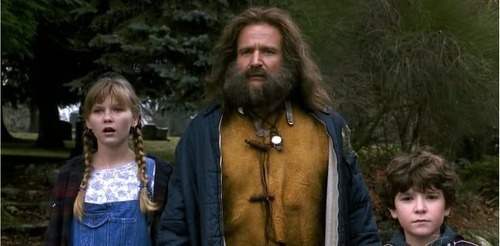
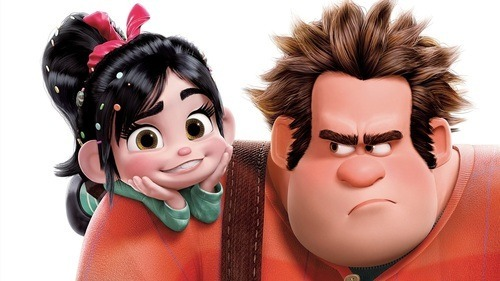
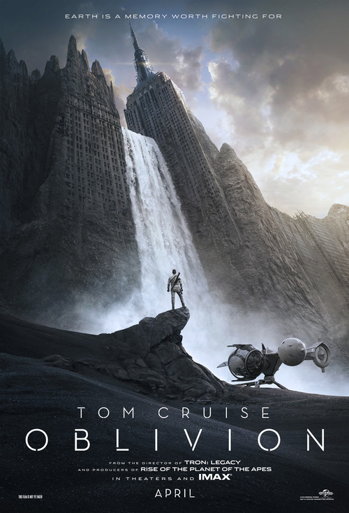

Снова чуть не забросил блог, но не смог. Надо постараться хотя бы раз в неделю что-нибудь прикреплять сюда. Поэтому тут такие новости:
У Джуманджи всё-таки будет ремэйк.

Не знаю, чем это обернётся, но раз такая пошла тенденция (переснимать старые добрые фильмы), то ничего не остаётся, как ждать новый Джуманджи, чтобы потом сравнивать.
У Ральфа будет продолжение и в нём появится

МАРИО. Как сказал режиссёр мультфильма, в первой части он не появился из-за того, что ему просто не нашли место в истории. И как уже говорили, второй фильм будет вращаться вокруг онлайн гейминга.
Ну и дебютный постер Обливиона

Такой пост-апокалиптический сай-фай про Тома Круза, от которого зависит судьба человечества. Всё это от отличного режиссёра отличного Трон: Наследие. А в воскресенье уже обещают первый трейлер.[[MORE]]
P.S. Может, после выходных запилю рецензию на хорошую книжку. Если осилю.